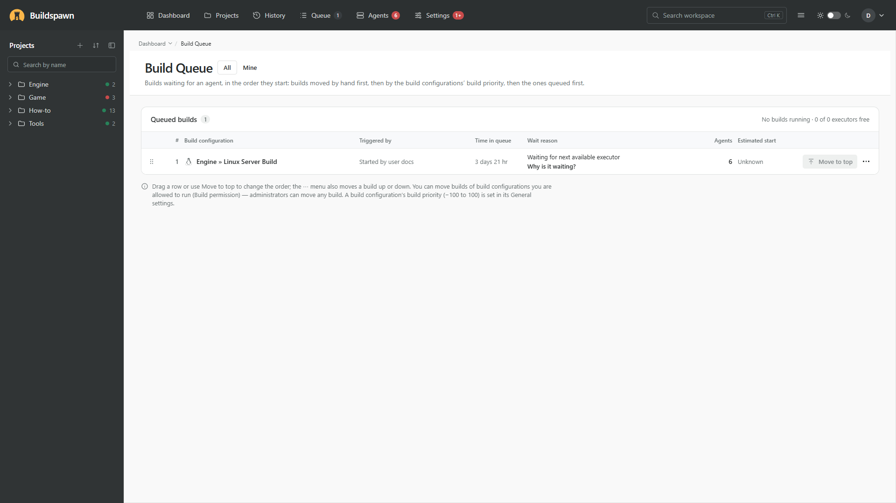

The queue
Builds wait in the queue until an agent that can run them is free. The Queue page shows what waits, why, and in which order.
Click Queue in the top bar. The number beside it shows how many builds wait now.
Read the queue

Each row is one waiting build:
| Column | What it shows |
|---|---|
| # | Its place in the queue. Number 1 starts first. |
| Build configuration | What will run, with its project. |
| Triggered by | Who or what started it: a user, a trigger, another build. |
| Time in queue | How long it has waited. |
| Wait reason | Why it cannot start yet, for example Not in a pool assigned to this project, an agent that is offline, or a missing agent requirement. Click Why is it waiting? for the full story. |
| Agents | How many agents could run it. |
| Estimated start | When it should start, from the builds running now. Unknown when no agent can take it. |
The top right of the list shows how many builds run and how many executors are free. Use All and Mine at the top to see every waiting build or only yours.
The card title shows how many builds wait. On its right it shows how many builds run and how many executors are free, for example No builds running · 3 of 3 executors free. When the queue is empty, the page says No builds in the queue and shows the free capacity. When the server is shutting down, it says no further builds will be performed.
A build whose position you set by hand shows a marker: Placed by hand: keeps this position until it starts. A build configuration with a build priority shows Priority N. Side builds of a Parallel block wait in the queue like any other build, and show as Side build of #N under their main build.
The order
Builds start in this order:
- Builds someone moved by hand come first.
- Then builds of build configurations with a higher build priority. Priority runs from −100 to 100 and is set on Settings › General of the build configuration.
- Then the builds that were queued first.
Reorder and remove builds
- Move to top: the build becomes number 1.
- ⋯ menu: move the build up or down one place, or cancel it.
- Drag: grab the handle at the left of a row and drop it where you want.
You can move builds of build configurations you are allowed to run. Administrators can move any build.
To put a build at the top when you start it, tick Put the build to the queue top in the Run dialog.
If a build waits a long time, read its wait reason first. Often an agent is offline or in the wrong pool. See Pools and The Agents page.
Cancel a queued build
Use the … menu of the row and choose Cancel. Buildspawn asks Cancel the queued build of ...? before it does it. Someone who may stop builds of that build configuration can cancel it. In the terminal program's Queue view, press c (it needs an API token). See Stop a build.
Builds that never wait for an agent
Some builds only coordinate other builds, such as the parent of parallel tests. These composite builds start at once and use no agent, so they never block the queue.